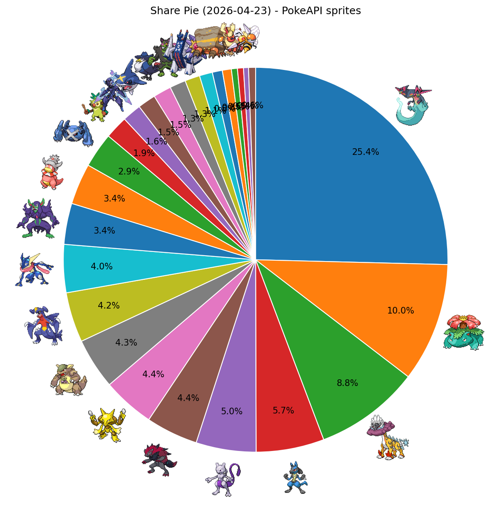
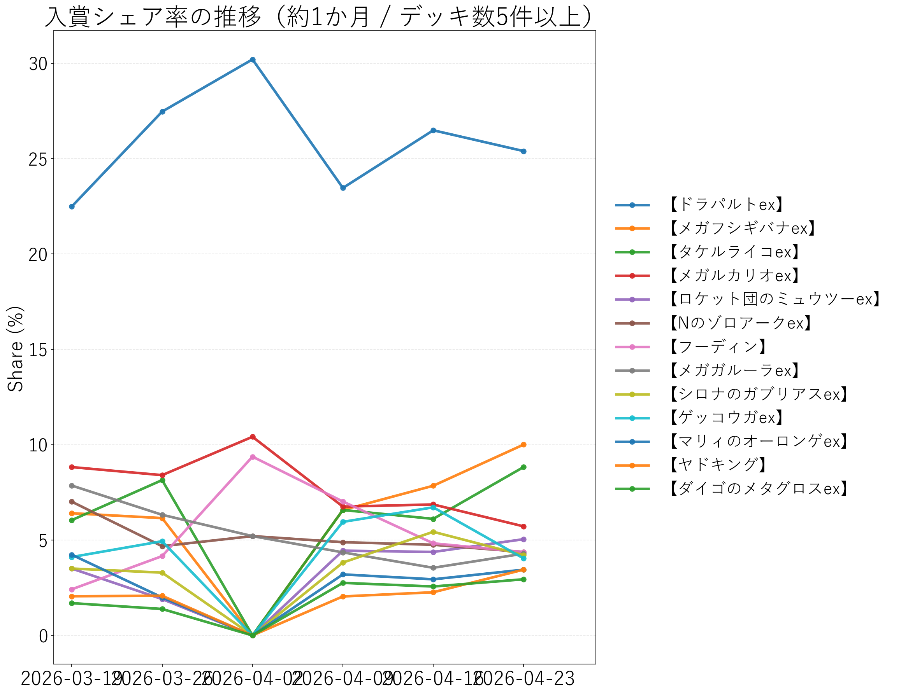

↔ 横スクロール
| 順位 | デッキタイプ | 入賞数 | シェア |
|---|---|---|---|
| 1 | 【ドラパルトex】 | 302 | 25.40% |
| 2 | 【メガフシギバナex】 | 119 | 10.01% |
| 3 | 【タケルライコex】 | 105 | 8.83% |
| 4 | 【メガルカリオex】 | 68 | 5.72% |
| 5 | 【ロケット団のミュウツーex】 | 60 | 5.05% |
| 6 | 【Nのゾロアークex】 | 52 | 4.37% |
| 7 | 【フーディン】 | 52 | 4.37% |
| 8 | 【メガガルーラex】 | 51 | 4.29% |
| 9 | 【シロナのガブリアスex】 | 50 | 4.21% |
| 10 | 【ゲッコウガex】 | 48 | 4.04% |
| 11 | 【マリィのオーロンゲex】 | 41 | 3.45% |
| 12 | 【ヤドキング】 | 41 | 3.45% |
| 13 | 【ダイゴのメタグロスex】 | 35 | 2.94% |
| 14 | 【おまつりおんど】 | 23 | 1.93% |
| 15 | 【ソウブレイズex】 | 19 | 1.60% |
| 16 | 【メガサメハダーex】 | 18 | 1.51% |
| 17 | 【ロケット団のドンカラス】 | 18 | 1.51% |
| 18 | 【イイネイヌ】 | 16 | 1.35% |
| 19 | 【ブリジュラスex】 | 15 | 1.26% |
| 20 | 【メガスターミーex】 | 13 | 1.09% |
| 21 | 【イワパレス】 | 10 | 0.84% |
| 22 | 【テラスタルバレット】 | 6 | 0.50% |
| 23 | 【ブースターex】 | 6 | 0.50% |
| 24 | 【スピアーex】 | 5 | 0.42% |
| 25 | その他 | 16 | 1.35% |

PokeAPIアイコン付きシェア円グラフ

入賞シェア率の推移